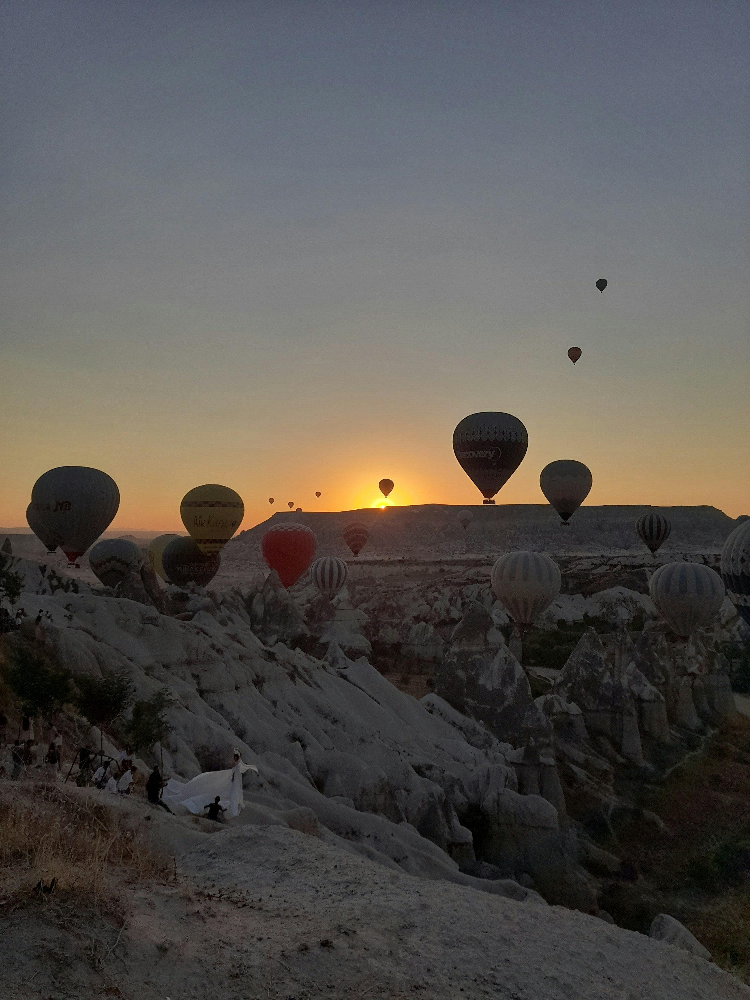
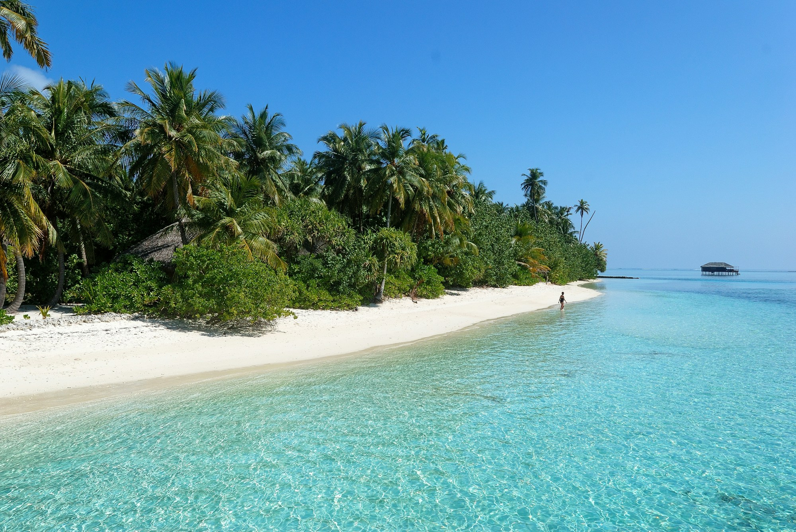
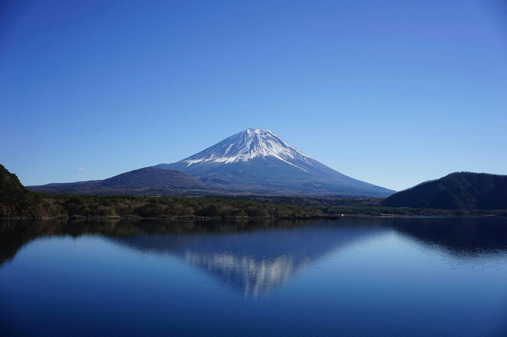
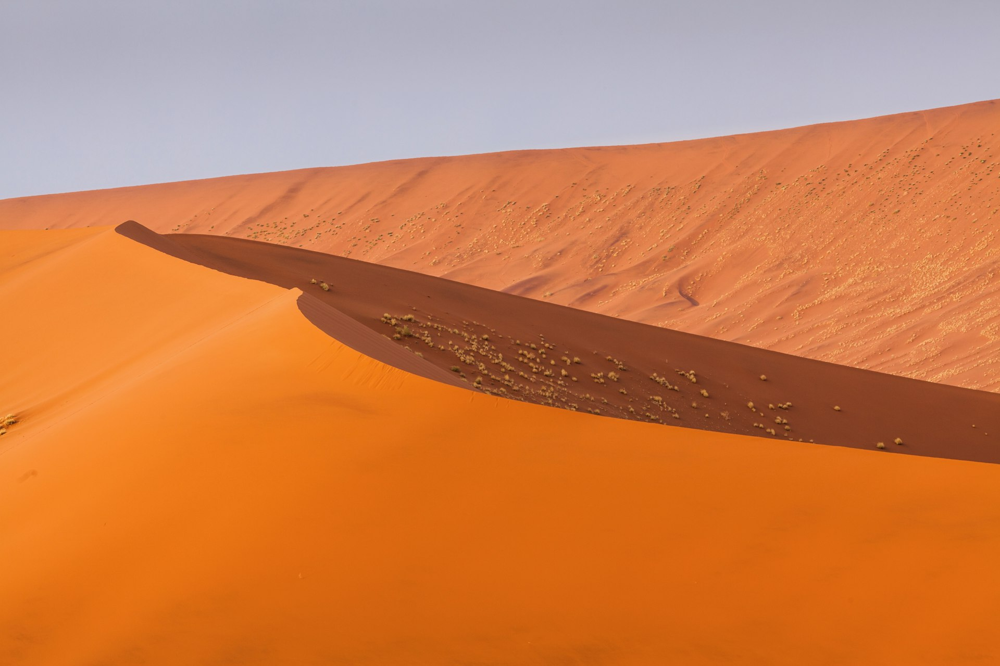
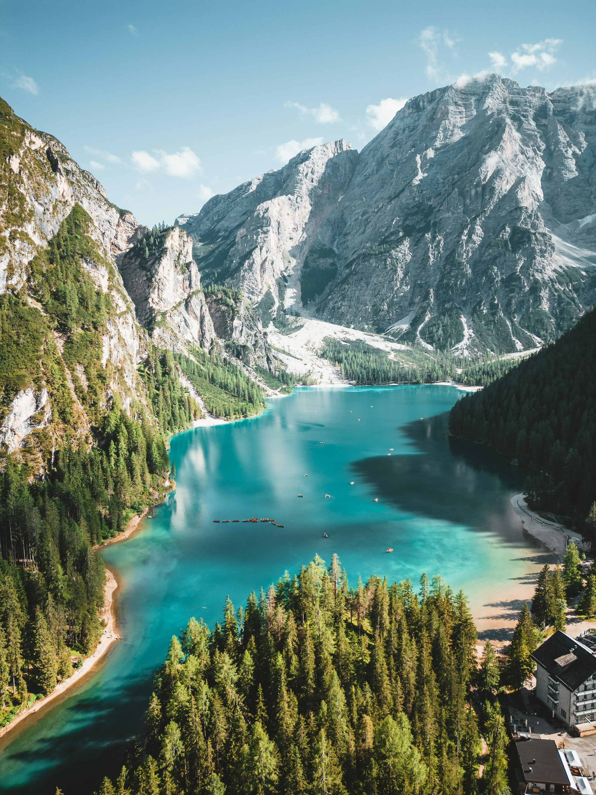
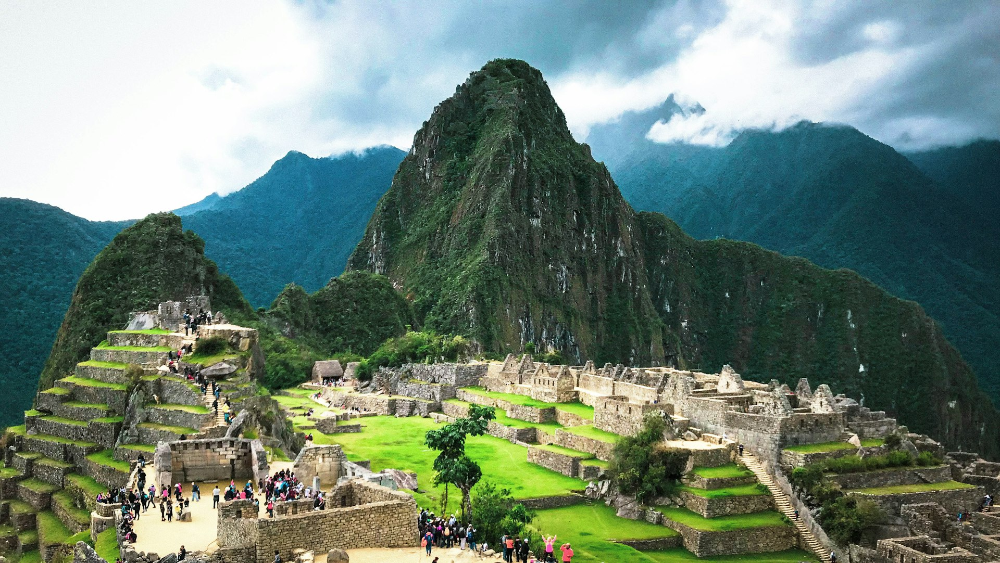

Cappadocia
04 DAYSAbove the ordinary.






Slow mornings. Unfamiliar streets.
Places that stay with you long
after you come home.
Above the ordinary.
A little further from everything.
Take the scenic way.
Five days of alpine air, lakeside walks
and a slower kind of adventure.
A trip should feel like yours.
Start with a little inspiration.
Leave room for the unexpected.
From mountain villages to island shores, explore the places behind the postcard.
Choose a rhythm that suits you. A sunrise worth waking for. An afternoon with nothing planned.
Pick your destination and travel dates, then take a suggested itinerary and make it your own.
Create a suggested itinerary to save and make your own. No booking or payment is made.